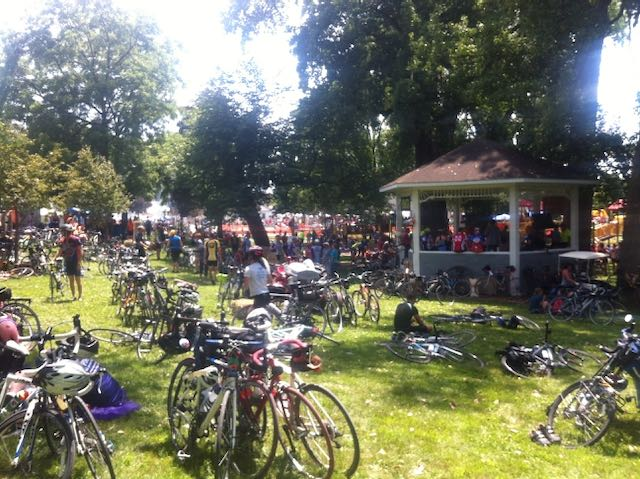
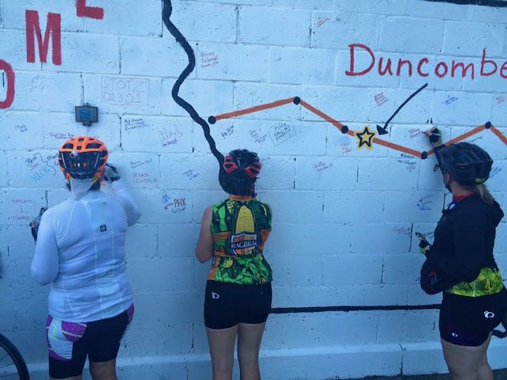
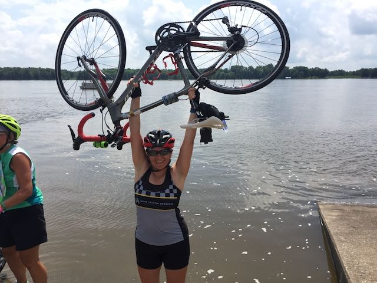
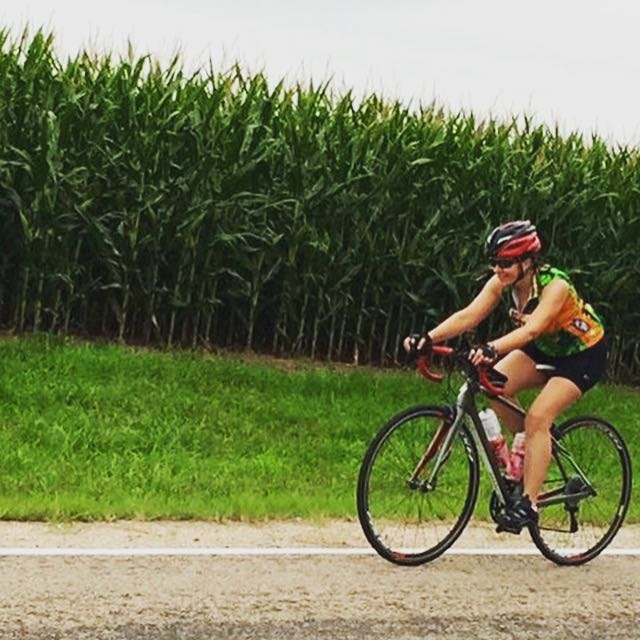
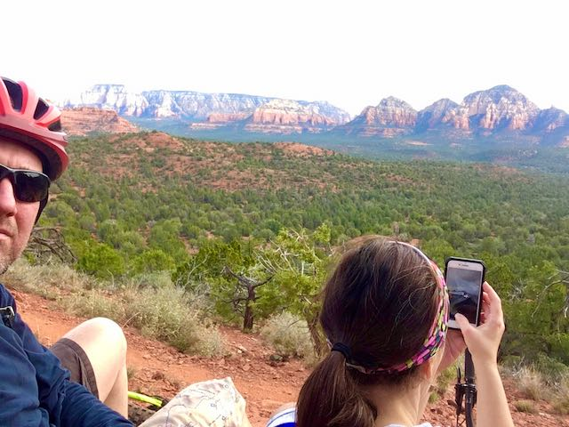
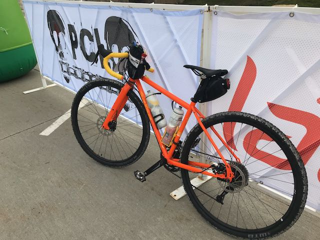
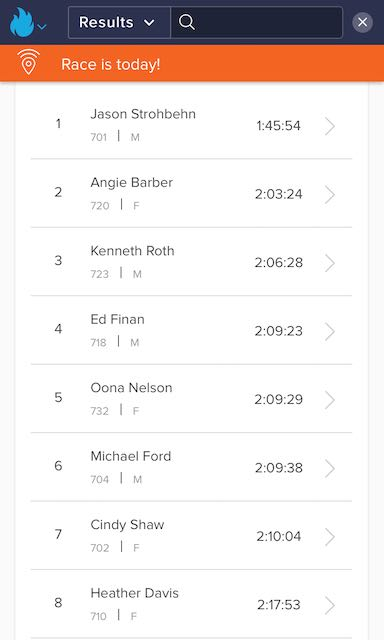

Growing up, bikes were transportation. Barefoot rides on the back of my brother's banana seat bike to the pool. Riding to the translation to go to school. Riding over to friends' houses and dirt biking in the woods. I have been a cyclist my whole life, but I started long-distance cycling as physical therapy after fracturing my leg while skiing when I was 17. At that time, I usually rode my bike on 50-mile journeys. And cycling was my main mode of transportation through college.
After graduating college, I moved to Arizona and took up mountain biking, mostly because I loved being outside and the fun people biked. During that time, I rode my bike up Mt. Elden in Flagstaff, and down again. Mt. Elden is 9,298 feet. Down was harder. Downhill is Life's video is an accurate depiction of the downhill journey I experienced. I also did my first bike camping trip - solo - from Flagstaff to Kinnikinick Lake and back - 200 miles round trip. I averaged 50 miles a day and did it in four days, fully loaded with gear. When I had kids, I scaled back my biking significantly for about 20 years.
After buying a new bike for myself and my daughter, my friend set an audacious goal for me: ride the entire route of RAGBRAI - 431 miles in 7 days. RAGBRAI (pronounced "rag bry") stands for the Register's Annual Great Bicycle Ride Across Iowa. The ride occurs the last full week in July and is considered to be the "oldest, largest, and longest multi-day recreational bicycle touring event in the world" ("About RAGBRAI", RAGBRAI website) The ride takes a different route every year across Iowa from west to east. The official limit of riders is 8500, but many days exceed that count. Riders take over the blocked roads, and the towns they stop in along the way. Riders of all sizes, ages, abilities, and nationalities participate. I've now participated in five RAGBRAIs and, when I think I've seen everything, I find I have not.
So many bikes!
Signing a town wall
Reaching the Mississippi River
Growing in competence on my bike, I found ways to set myself goals to challenge myself. First, I set a goal of riding 100 (a "century") miles in one ride.
Riding my first century
Then, I went mountain biking again. Riding on the side of a cliff, that was the first time I ever heard my husband Sean say, "I don't think I can do this." But, we did, and I only fell into a ravine once.
Sometimes you have to go difficult places to see views like this
Last year, I entered my first race. On gravel. It was a new event in an established event that attracts people from all over the world - Gravel Worlds in Lincoln, Nebraska. Thirty miles on gravel. I came in fourth place out of all the women and eighth overall in my fiftieth year of life. Sean rode 150 miles on gravel, at the end of which he said, "Everything hurts." And this man does not complain.
My gravel bike
Gravel Worlds Buccaneer Race Results
So, here we are in 2020. When so much changed. I began the year signed up for two gravel races, one of which was a higher mileage race in Gravel Worlds. And then everything changed. RAGBRAI and Gravel Worlds were canceled. The other race continues but I don't feel it is safe to participate. I have been able to get small rides in but I don't have the heart for the long rides when I can't do them with groups of friends and there aren't any events to train for. Plus, my ability to take long rides is limited by school. So this year is a down year for bicycling. But I'm hopeful this winter we can ride somewhere warm and next year by summer we may be able to take some epic journeys again. Meantime, I ride about 36 miles a week, commuting to the pool and back home to work. I may not be in any races this year, but I'm not missing out since they are mostly cancelled. I've certainly learned to appreciate them that much more.